Clase 6 Extensiones para regresión lineal y logística
Los modelos lineales son modelos simples que tienen la ventaja de que es relativamente fácil entender cómo contribuyen las variables de entrada (simplemente describimos los coeficientes), y es relativamente fácil ajustarlos.
Sin embargo, puede ser que sean pobres desde el punto de vista predictivo. Hay dos razones:
Los coeficientes tienen varianza alta, de modo que las predicciones resultantes son inestables (por ejemplo, por pocos datos o variables de entradas correlacionadas). En este caso, vimos que con el enfoque de regularización ridge o lasso podemos mejorar la estabilidad, las predicciones, y obtener modelos más parsimoniosos.
El modelo tiene sesgo alto, en el sentido de que la estructura lineal es deficiente para describir patrones claros e importantes en los datos. Este problema puede suceder cuando tenemos relaciones complejas entre las variables. Cuando hay relativamente pocas entradas y suficientes datos, puede ser posible ajustar estructuras más realistas y complejas. Aunque veremos otros métodos para atacar este problema más adelante, a veces extensiones simples del modelo lineal pueden resolver este problema. Igualmente, esperamos encontrar mejores predicciones con modelos más realistas.
6.1 Cómo hacer más flexible el modelo lineal
La idea básica es entonces transformar a nuevas entradas, antes de ajustar un modelo: \[(x_1,...,x_p) \to (b_1(x),...,b_M (x)).\]
donde típicamente \(M\) es mayor que \(p\). Entonces, en lugar de ajustar el modelo lineal en las \(x_1,\ldots, x_p\), que es
\[ f(x) = \beta_0 + \sum_{i=1}^p \beta_jx_j\]
ajustamos un modelo lineal en las entradas transformadas:
\[ f(x) = \beta_0 + \sum_{i=1}^M \beta_jb_j(x).\]
Como cada \(b_j\) es una función que toma valores numéricos, podemos considerarla como una entrada derivada de las entradas originales.
Ejemplo
Si \(x_1\) es compras totales de un cliente de tarjeta de crédito, y \(x_2\) es el número de compras, podemos crear una entrada derivada \(b_1(x_1,x_2)=x_1/x_2\) que representa el tamaño promedio por compra. Podríamos entonces poner \(b_2(x_1,x_2)=x_1\), \(b_3(x_1,x_2)=x_2\), y ajustar un modelo lineal usando las entradas derivadas \(b_1,b_2, b_3\).
Lo conveniente de este enfoque es que lo único que hacemos para hacer más flexible el modelo es transformar en primer lugar las variables de entrada (quizá produciendo más entradas que el número de variables originales). Después construimos un modelo lineal, y todo lo que hemos visto aplica sin cambios: el modelo sigue siendo lineal, pero el espacio de entradas es diferente (generalmente expandido).
Veremos las siguientes técnicas:
- Incluir variables cualitativas (categóricas). Transformación de variables.
- Interacciones entre variables: incluir términos de la forma \(x_1x_2\)
- Regresión polinomial: incluír términos de la forma \(x_1^2\), \(x_1^3\), etcétera.
- Splines de regresión.
6.2 Transformación de entradas
Una técnica útil para mejorar el sesgo de modelos de regresión consiste en incluir o sustituir valores transformados de las variables de entrada. Una de las más comunes es usar logaritmo para variables positivas:
Ejemplo
Consideramos predecir el quilataje de un diamante en función de su precio.
library(ggplot2)
library(dplyr)
library(tidyr)
set.seed(231)
diamonds_muestra <- sample_n(diamonds, 3000)
ggplot(diamonds_muestra, aes(x=price, y=carat)) + geom_point() +
geom_smooth(method = 'lm')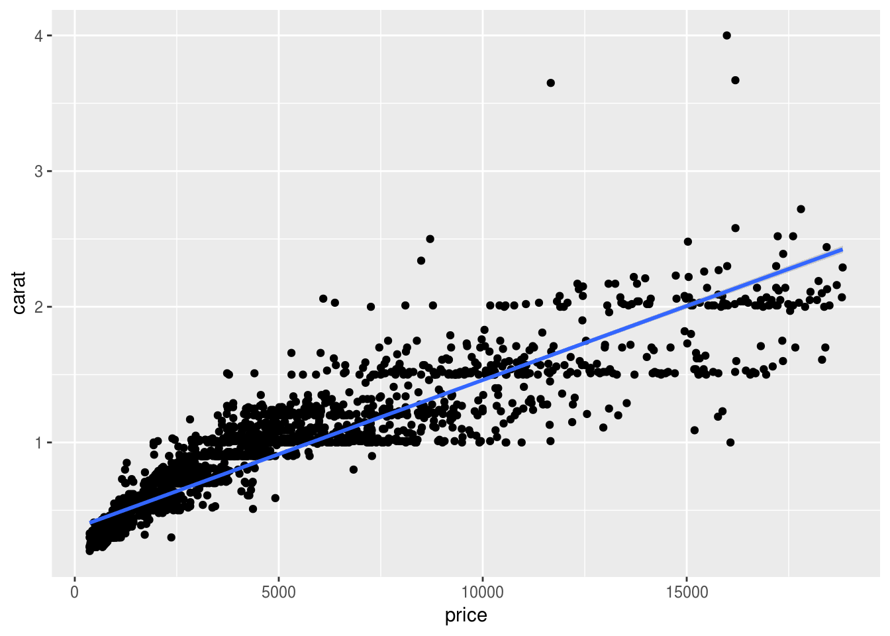
Nótese que el modelo lineal está sesgado, y produce sobrestimaciones y subestimaciones para distintos valores de \(x\). Aunque podríamos utilizar un método más flexible para este modelo, una opción es transformar entrada y salida con logaritmo:
diamonds_muestra <- diamonds_muestra %>%
mutate(log_price = log(price), log_carat = log(carat))
ggplot(diamonds_muestra, aes(x=log_price, y=log_carat)) + geom_point() +
geom_smooth(method = 'lm')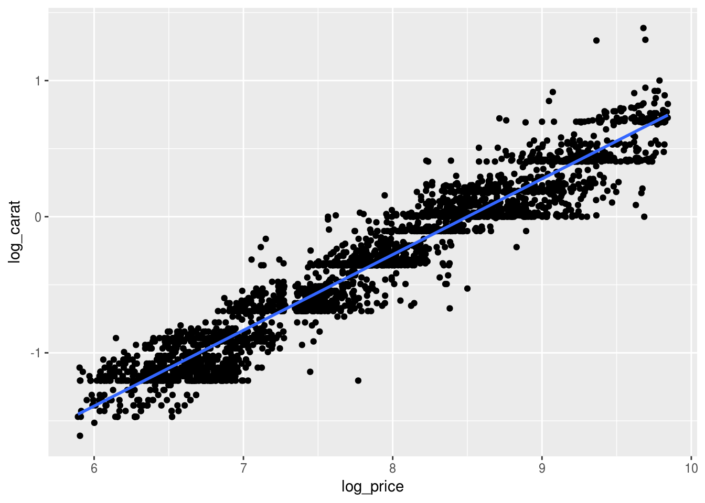
Nota: si tenemos ceros en los datos podemos usar también \(\log(x+1)\). Podemos graficar también en unidades originales:
ggplot(diamonds_muestra, aes(x=price/1000, y=carat)) + geom_point() +
geom_smooth(method = 'lm') +
scale_x_log10(breaks=2^seq(-1,5,1)) + scale_y_log10(breaks=2^seq(-2,5,1))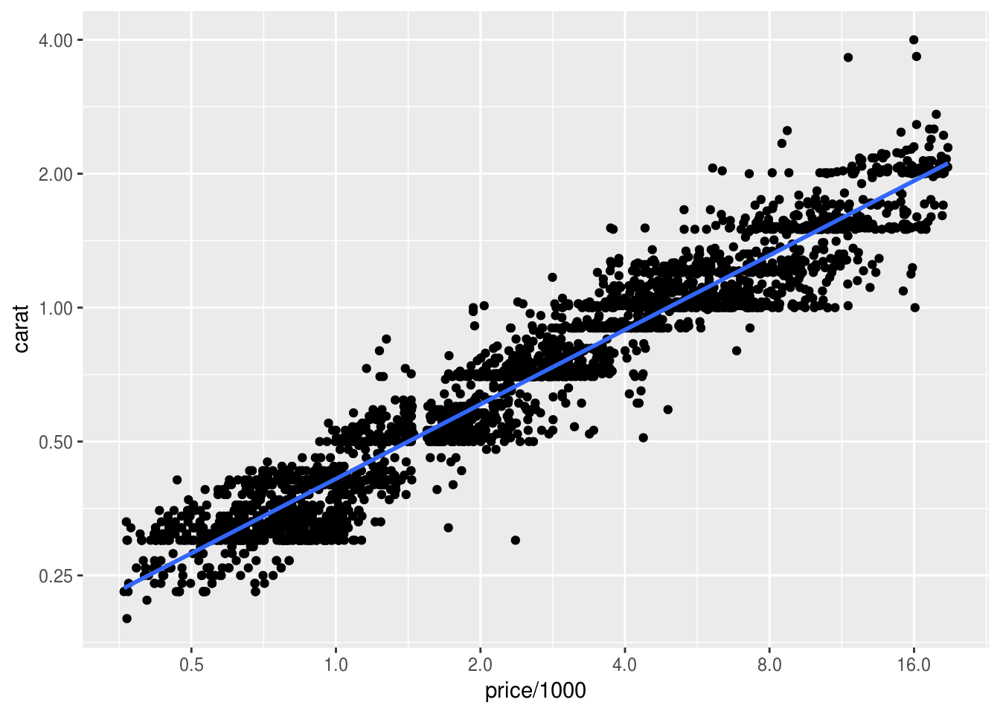
- Cuando una variable toma valores positivos y recorre varios órdenes de magnitud, puede ayudar transformar con logaritmo o raíz cuadrada (esto incluye transformar la variable respuesta).
- Menos común: variables que son proporciones \(p\) pueden transformarse mediante la transformación inversa de la logística (\(x = \log(\frac{p}{1-p})\).)
6.3 Variables cualitativas
Muchas veces queremos usar variables cualitativas como entradas de nuestro modelo. Pero en la expresión
\[ f(x) = \beta_0 + \sum_{i=1}^p \beta_jx_j,\] todas las entradas son numéricas. Podemos usar un truco simple para incluir variables cualitativas
Ejemplo
Supongamos que queremos incluir la variable color:
diamonds_muestra %>% group_by(color) %>% count## # A tibble: 7 x 2
## # Groups: color [7]
## color n
## <ord> <int>
## 1 D 383
## 2 E 542
## 3 F 533
## 4 G 645
## 5 H 471
## 6 I 270
## 7 J 156ggplot(diamonds_muestra,
aes(x=price, y=carat, colour=color, group=color)) +
geom_point(alpha=0.5) +
geom_smooth(method='lm', se=FALSE, size=1.5) +
scale_y_log10(breaks=c(0.25,0.5,1,2))+
scale_x_log10(breaks=c(500,1000,2000,4000,8000))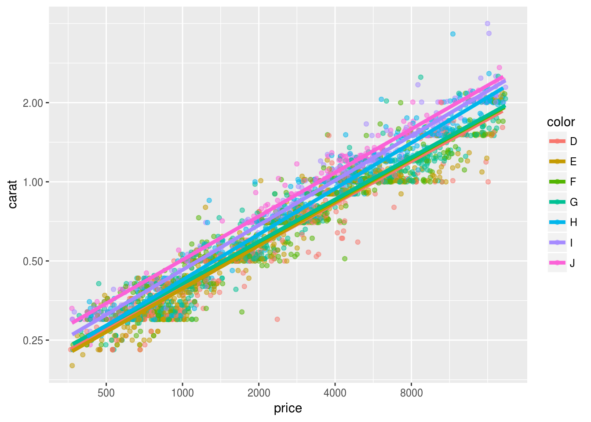
Podemos incluir de manera simple esta variable creando variables dummy o indicadoras, que son variables que toman valores 0 o 1 dependiendo de cada clase:
diamonds_muestra <- diamonds_muestra %>% mutate(color= as.character(color))
datos <- diamonds_muestra[, c('log_carat', 'log_price', 'color')]
head(datos)## # A tibble: 6 x 3
## log_carat log_price color
## <dbl> <dbl> <chr>
## 1 0.07696104 8.765771 H
## 2 0.26236426 8.950792 H
## 3 -0.23572233 7.948385 G
## 4 -1.17118298 6.733402 F
## 5 0.23901690 8.421123 J
## 6 0.03922071 8.811205 Gx_e <- model.matrix( ~ color, data = datos)
head(x_e, 10)## (Intercept) colorE colorF colorG colorH colorI colorJ
## 1 1 0 0 0 1 0 0
## 2 1 0 0 0 1 0 0
## 3 1 0 0 1 0 0 0
## 4 1 0 1 0 0 0 0
## 5 1 0 0 0 0 0 1
## 6 1 0 0 1 0 0 0
## 7 1 0 1 0 0 0 0
## 8 1 1 0 0 0 0 0
## 9 1 0 0 1 0 0 0
## 10 1 0 1 0 0 0 0Y ahora podemos hacer:
datos_d <- as.data.frame(x_e)
datos_d$log_carat <- datos$log_carat
datos_d$log_price <- datos$log_price
datos_d$`(Intercept)` <- NULL
mod_1 <- lm(log_carat ~ ., data = datos_d)
summary(mod_1)##
## Call:
## lm(formula = log_carat ~ ., data = datos_d)
##
## Residuals:
## Min 1Q Median 3Q Max
## -0.73747 -0.08570 -0.00132 0.08607 0.78010
##
## Coefficients:
## Estimate Std. Error t value Pr(>|t|)
## (Intercept) -4.711054 0.020670 -227.923 < 2e-16 ***
## colorE 0.001684 0.009212 0.183 0.854984
## colorF 0.027917 0.009245 3.020 0.002551 **
## colorG 0.032919 0.008904 3.697 0.000222 ***
## colorH 0.109352 0.009518 11.489 < 2e-16 ***
## colorI 0.184680 0.010983 16.815 < 2e-16 ***
## colorJ 0.259030 0.013155 19.690 < 2e-16 ***
## log_price 0.546347 0.002538 215.272 < 2e-16 ***
## ---
## Signif. codes: 0 '***' 0.001 '**' 0.01 '*' 0.05 '.' 0.1 ' ' 1
##
## Residual standard error: 0.1379 on 2992 degrees of freedom
## Multiple R-squared: 0.9436, Adjusted R-squared: 0.9435
## F-statistic: 7152 on 7 and 2992 DF, p-value: < 2.2e-16Nótese que si la variable categórica tiene \(K\) clases, solo creamos variables indicadores de las primeras \(K-1\) clases, pues la dummy de la última clase tiene información redundante: es decir, si para las primeras \(K-1\) clases las variables dummy son cero, entonces ya sabemos que se trata de la última clase \(K\), y no necesitamos incluir una indicadora para la última clase.
Más fácilmente, la función lm hace la codificación dummy automáticamente. Por ejemplo, para el modelo logarítmico:
lm(log_carat ~ log_price + color, data = diamonds_muestra) ##
## Call:
## lm(formula = log_carat ~ log_price + color, data = diamonds_muestra)
##
## Coefficients:
## (Intercept) log_price colorE colorF colorG
## -4.711054 0.546347 0.001684 0.027917 0.032919
## colorH colorI colorJ
## 0.109352 0.184680 0.259030Observaciones: - Nótese también que no hay coeficiente para una de las clases, por lo que discutimos arriba. También podemos pensar que el coeficiente de esta clase es 0, y así comparamos con las otras clases. - Cuando tenemos variables dummy, el intercept se interpreta con el nivel esperado cuando las variables cuantitativas valen cero, y la variable categórica toma la clase que se excluyó en la construcción de las indicadoras.
6.4 Interacciones
En el modelo lineal, cada variable contribuye de la misma manera independientemente de los valores de las otras variables. Esta es un simplificación o aproximación útil, pero muchas veces puede producir sesgo demasiado grande en el modelo. Por ejemplo: consideremos los siguientes datos de la relación de mediciones de temperatura y ozono en la atmósfera:
head(airquality)## Ozone Solar.R Wind Temp Month Day
## 1 41 190 7.4 67 5 1
## 2 36 118 8.0 72 5 2
## 3 12 149 12.6 74 5 3
## 4 18 313 11.5 62 5 4
## 5 NA NA 14.3 56 5 5
## 6 28 NA 14.9 66 5 6air <- filter(airquality, !is.na(Ozone) & !is.na(Wind) & !is.na(Temp))
lm(Ozone ~Temp, data = air[1:80,])##
## Call:
## lm(formula = Ozone ~ Temp, data = air[1:80, ])
##
## Coefficients:
## (Intercept) Temp
## -136.474 2.306set.seed(9132)
air <- sample_n(air, 116)
ggplot(air[1:50,], aes(x = Temp, y = Ozone)) + geom_point() +
geom_smooth(method = 'lm', se = FALSE)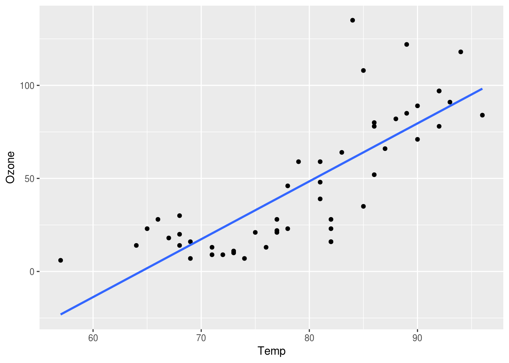
Y notamos un sesgo posible en nuestro modelo. Si coloreamos por velocidad del viento:
cuantiles <- quantile(air$Wind)
ggplot(air[1:50,], aes(x = Temp, y = Ozone, colour= cut(Wind, cuantiles))) +
geom_point() + geom_smooth(method = 'lm', se = FALSE)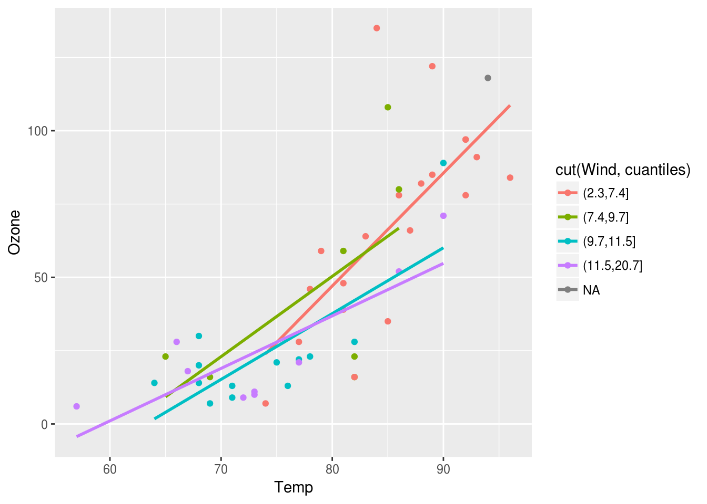
Nótese que parece ser que cuando los niveles de viento son altos, entonces hay una relación más fuerte entre temperatura y Ozono. Esto es una interacción de temperatura y viento.
Podemos hacer los siguiente: incluír un factor adicional, el producto de temperatura con viento:
air$temp_wind <- air$Temp*air$Wind
mod_0 <- lm(Ozone ~ Temp, data = air[1:50,])
mod_1 <- lm(Ozone ~ Temp + Wind, data = air[1:50,])
mod_2 <- lm(Ozone ~ Temp + Wind + temp_wind, air[1:50,])
mod_2##
## Call:
## lm(formula = Ozone ~ Temp + Wind + temp_wind, data = air[1:50,
## ])
##
## Coefficients:
## (Intercept) Temp Wind temp_wind
## -317.8272 4.8036 15.9498 -0.2311pred_0 <- predict(mod_0, newdata = air[51:116,])
pred_1 <- predict(mod_1, newdata = air[51:116,])
pred_2 <- predict(mod_2, newdata = air[51:116,])
mean(abs(pred_0-air[51:116,'Ozone']))## [1] 19.88217mean(abs(pred_1-air[51:116,'Ozone']))## [1] 17.13767mean(abs(pred_2-air[51:116,'Ozone']))## [1] 15.52405Podemos interpretar el modelo con interacción de la siguiente forma:
- Si \(Wind = 5\), entonces la relación Temperatura Ozono es: \[ Ozono = -290 + 4.5Temp + 14.6(5) - 0.2(Temp)(5) = -217 + 3.5Temp\]
- Si \(Wind=10\), entonces la relación Temperatura Ozono es: \[ Ozono = -290 + 4.5Temp + 14.6(15) - 0.2(Temp)(15) = -71 + 1.5Temp\]
Incluir interacciones en modelos lineales es buena idea para problemas con un número relativamente chico de variables (por ejemplo, \(p < 10\)). En estos casos, conviene comenzar agregando interacciones entre variables que tengan efectos relativamente grandes en la predicción. No es tan buena estrategia para un número grande de variables: por ejemplo, para clasificación de dígitos, hay 256 entradas. Poner todas las interacciones añadiría más de 30 mil variables adicionales, y es difícil escoger algunas para incluir en el modelo a priori.
Pueden escribirse interacciones en fórmulas de lm y los cálculos se hacen automáticamente:
mod_3 <- lm(Ozone ~ Temp + Wind + Temp:Wind, air[1:50,])
mod_3##
## Call:
## lm(formula = Ozone ~ Temp + Wind + Temp:Wind, data = air[1:50,
## ])
##
## Coefficients:
## (Intercept) Temp Wind Temp:Wind
## -317.8272 4.8036 15.9498 -0.23116.5 Categorización de variables
En categorización de variable, intentamos hacer un ajuste local en distintas partes del espacio de entrada. La idea es contruir cubetas, particionando el rango de una variable dada, y ajustar entonces un modelo usando la variable dummy indicadora de cada cubeta.
dat_wage <- ISLR::Wage
ggplot(dat_wage, aes(x=age, y=wage)) + geom_point()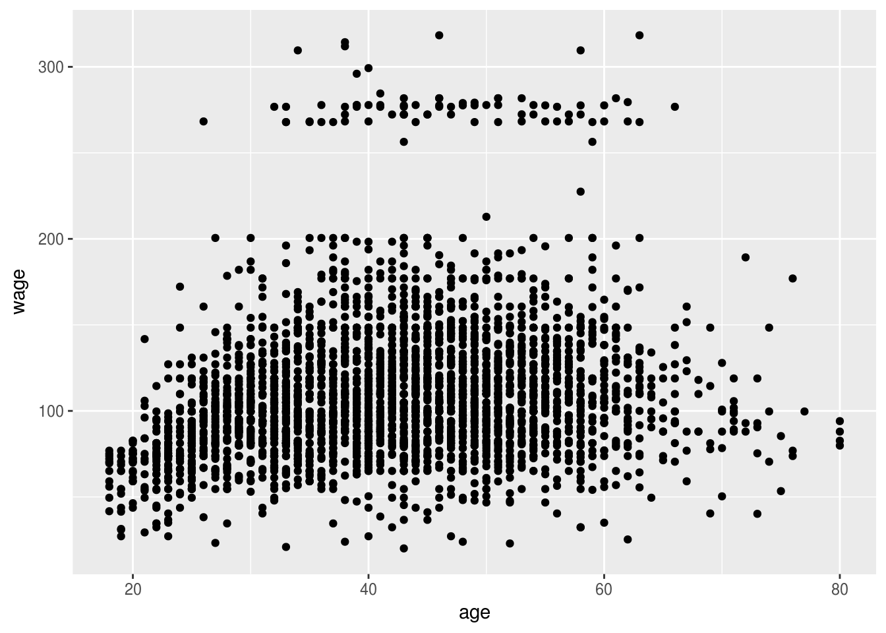
Cuando la relación entre entradas y salida no es lineal, podemos obtener menor sesgo en nuestros modelos usando esta técnica. En este ejemplo, escogimos edades de corte aproximadamente separadas por 10 años, por ejemplo:
#cuantiles_age <- quantile(dat_wage$age, probs=seq(0,1,0.2))
#cuantiles_age
dat_wage <- dat_wage %>%
mutate(age_cut = cut(age, c(18, 25, 35, 45, 55, 65, 80), include.lowest=TRUE))
head(dat_wage)## year age maritl race education region
## 1 2006 18 1. Never Married 1. White 1. < HS Grad 2. Middle Atlantic
## 2 2004 24 1. Never Married 1. White 4. College Grad 2. Middle Atlantic
## 3 2003 45 2. Married 1. White 3. Some College 2. Middle Atlantic
## 4 2003 43 2. Married 3. Asian 4. College Grad 2. Middle Atlantic
## 5 2005 50 4. Divorced 1. White 2. HS Grad 2. Middle Atlantic
## 6 2008 54 2. Married 1. White 4. College Grad 2. Middle Atlantic
## jobclass health health_ins logwage wage age_cut
## 1 1. Industrial 1. <=Good 2. No 4.318063 75.04315 [18,25]
## 2 2. Information 2. >=Very Good 2. No 4.255273 70.47602 [18,25]
## 3 1. Industrial 1. <=Good 1. Yes 4.875061 130.98218 (35,45]
## 4 2. Information 2. >=Very Good 1. Yes 5.041393 154.68529 (35,45]
## 5 2. Information 1. <=Good 1. Yes 4.318063 75.04315 (45,55]
## 6 2. Information 2. >=Very Good 1. Yes 4.845098 127.11574 (45,55]mod_age <- lm(wage ~ age_cut, data=dat_wage)
mod_age##
## Call:
## lm(formula = wage ~ age_cut, data = dat_wage)
##
## Coefficients:
## (Intercept) age_cut(25,35] age_cut(35,45] age_cut(45,55]
## 76.28 27.88 42.79 41.34
## age_cut(55,65] age_cut(65,80]
## 42.73 26.27dat_wage$pred_wage <- predict(mod_age)
ggplot(dat_wage) + geom_point(aes(x=age, y=wage)) +
geom_line(aes(x=age, y=pred_wage), colour = 'red', size=1.1)- Podemos escoger los puntos de corte en lugares que son razonables para el problema (rangos en los es razonable modelar como una constante).
- También podemos hacer cortes automáticos usando percentiles de los datos: por ejemplo, cortar en cuatro usando los percentiles 25%, 0.5% y 0.75%. Con más datos es posible incrementar el número de cortes.
- Nótese que cuando hacemos estas categorizaciones estamos incrementando el número de parámetros a estimar del modelo (si hacemos tres cortes, por ejemplo, aumentamos en 3 el número de parámetros).
Muchas veces los splines son mejores opciones:
6.6 Splines
En estos ejemplos, también es posible incluir términos cuadráticos para modelar la relación, por ejemplo:
dat_wage$age_2 <- dat_wage$age^2
mod_age <- lm(wage ~ age + age_2, data=dat_wage)
mod_age##
## Call:
## lm(formula = wage ~ age + age_2, data = dat_wage)
##
## Coefficients:
## (Intercept) age age_2
## -10.42522 5.29403 -0.05301dat_wage$pred_wage <- predict(mod_age)
ggplot(dat_wage) + geom_point(aes(x=age, y=wage)) +
geom_line(aes(x=age, y=pred_wage), colour = 'red', size=1.1)Estas dos técnicas para hacer más flexible el modelo lineal tienen algunas deficiencias:
- Muchas veces usar potencias de variables de entrada es una mala idea, pues fácilmente podemos encontrar problemas numéricos (potencias altas pueden dar valores muy chicos o muy grandes).
- La categorización de variables numéricas puede resultar en predictores con discontinuidades, lo cual no siempre es deseable (interpretación).
Una alternativa es usar splines, que son familias de funciones con buenas propiedades que nos permiten hacer expansiones del espacio de entradas. No las veremos con detalle, pero aquí hay unos ejemplos:
Por ejemplo, podemos usar B-spines, que construyen “chipotes” en distintos rangos de la variable de entrada (es como hacer categorización, pero con funciones de respuesta suaves):
library(splines2)
age <- seq(18,80, 0.2)
splines_age <- bSpline(age,
knots = c(25, 35, 45, 55, 65),
degree = 3)
matplot(x = age, y = splines_age, type = 'l')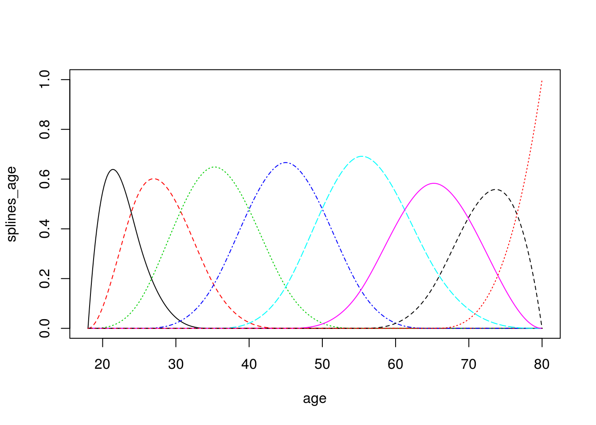
Observación: estos splines son como una versión suave de categorización de variables numéricas. En particular, los splines de grado 0 son justamente funciones que categorizan variables:
splines_age <- bSpline(age,
knots = c(25, 35, 45, 55, 65),
degree = 0)
matplot(splines_age, type='l')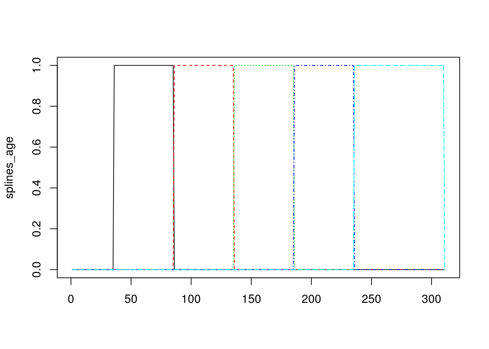
Por ejemplo: si expandimos el espacio de entradas con estos splines y corremos el modelo:
dat_wage <- ISLR::Wage
splines_age <- bSpline(dat_wage$age,
knots = c(25, 35, 45, 65),
degree = 3) %>% data.frame
colnames(splines_age) <- paste0('spline_', 1:6)
dat_wage <- bind_cols(dat_wage, splines_age)
dat_sp <- dat_wage %>% dplyr::select(wage, contains('spline'))
head(dat_sp)## wage spline_1 spline_2 spline_3 spline_4 spline_5
## 1 75.04315 0.0000000 0.000000000 0.00000000 0.0000000 0.00000000
## 2 70.47602 0.4555974 0.474260292 0.06722689 0.0000000 0.00000000
## 3 130.98218 0.0000000 0.000000000 0.33333333 0.5925926 0.07407407
## 4 154.68529 0.0000000 0.001481481 0.44018519 0.5204074 0.03792593
## 5 75.04315 0.0000000 0.000000000 0.14062500 0.6272321 0.22704082
## 6 127.11574 0.0000000 0.000000000 0.05545833 0.5406104 0.37417611
## spline_6
## 1 0.000000000
## 2 0.000000000
## 3 0.000000000
## 4 0.000000000
## 5 0.005102041
## 6 0.029755102mod_age <- lm(wage ~. , data=dat_sp)
mod_age##
## Call:
## lm(formula = wage ~ ., data = dat_sp)
##
## Coefficients:
## (Intercept) spline_1 spline_2 spline_3 spline_4
## 65.044 1.464 27.176 54.472 52.121
## spline_5 spline_6
## 58.230 31.771dat_wage$pred_wage <- predict(mod_age)
ggplot(dat_wage) + geom_point(aes(x=age, y=wage)) +
geom_line(aes(x=age, y=pred_wage), colour = 'red', size=1.1)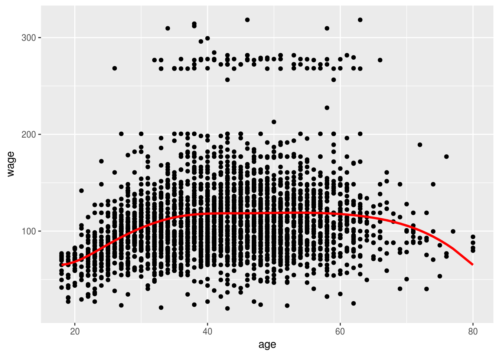
O podemos usar i-splines (b-splines integrados), por ejemplo:
splines_age <- iSpline(age,
knots = c(25, 35, 45, 65),
degree = 2)
matplot(splines_age, type='l')
dat_wage <- ISLR::Wage
splines_age <- iSpline(dat_wage$age,
knots = c(25, 35, 45, 65),
degree = 2) %>% data.frame
colnames(splines_age) <- paste0('spline_', 1:6)
dat_wage <- bind_cols(dat_wage, splines_age)
dat_sp <- dat_wage %>% dplyr::select(wage, contains('spline'))
head(dat_sp)## wage spline_1 spline_2 spline_3 spline_4 spline_5 spline_6
## 1 75.04315 0.0000000 0.00000000 0.0000000 0.00000000 0.000000000 0
## 2 70.47602 0.5414872 0.06722689 0.0000000 0.00000000 0.000000000 0
## 3 130.98218 1.0000000 1.00000000 0.6666667 0.07407407 0.000000000 0
## 4 154.68529 1.0000000 0.99851852 0.5583333 0.03792593 0.000000000 0
## 5 75.04315 1.0000000 1.00000000 0.8593750 0.23214286 0.005102041 0
## 6 127.11574 1.0000000 1.00000000 0.9445417 0.40393122 0.029755102 0mod_age <- lm(wage ~. , data=dat_sp)
mod_age##
## Call:
## lm(formula = wage ~ ., data = dat_sp)
##
## Coefficients:
## (Intercept) spline_1 spline_2 spline_3 spline_4
## 64.643 28.331 26.442 -2.510 7.600
## spline_5 spline_6
## -31.903 -5.441dat_wage$pred_wage <- predict(mod_age)
ggplot(dat_wage) + geom_point(aes(x=age, y=wage)) +
geom_line(aes(x=age, y=pred_wage), colour = 'red', size=1.1)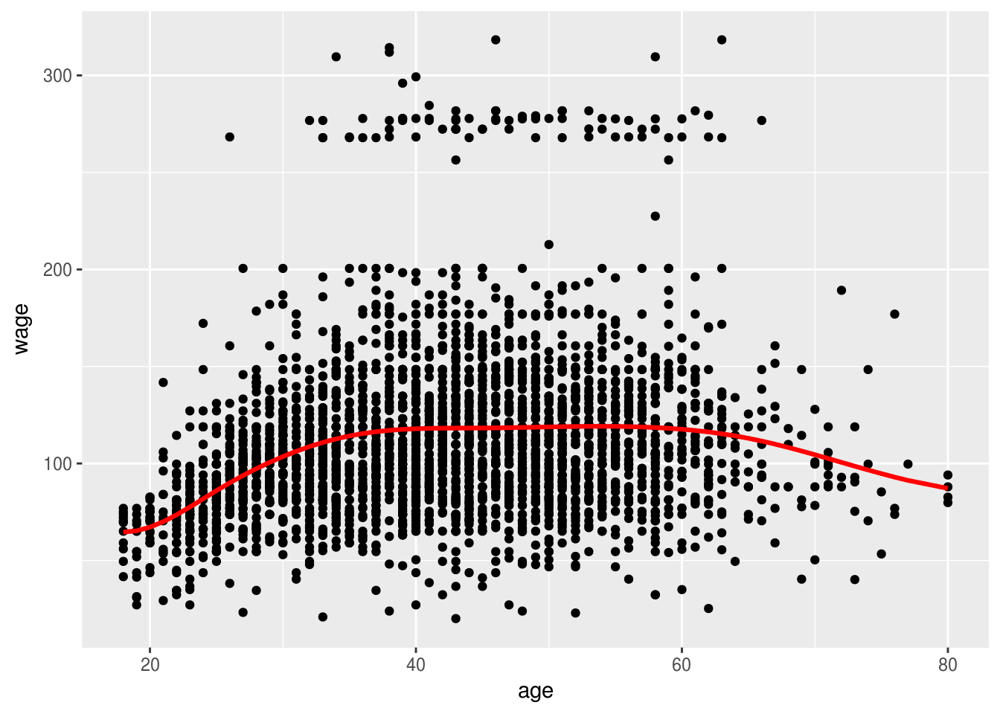
6.6.1 ¿Cuándo usar estas técnicas?
Estas técnicas pueden mejorar considerablemente nuestros modelos lineales, pero a veces puede ser difícil descubrir exactamente que transformaciones pueden ser útiles, y muchas veces requiere conocimiento experto del problema que enfrentamos. En general,
- Es mejor usar regularización al hacer este tipo de trabajo, para protegernos de varianza alta cuando incluimos varias entradas derivadas.
- Es buena idea probar incluir interacciones entre variables que tienen efectos grandes en la predicción, o interacciones que creemos son importantes en nuestro problema (por ejemplo, temperatura y viento en nuestro ejemplo de arriba, o existencia de estacionamiento y tráfico vehicular como en nuestro ejemplo de predicción de ventas de una tienda).
- Gráficas como la de arriba (entrada vs respuesta) pueden ayudarnos a decidir si conviene categorizar alguna variable o añadir un efecto no lineal.
Este es un trabajo que no es tan fácil, pero para problema con relativamente pocas variables es factible. En situaciones con muchas variables de entrada y muchos datos, existen mejores opciones.